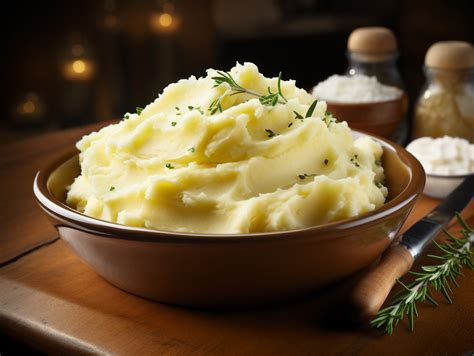

Mashed Potatoes
Go back

Mashed potatoes are a creamy and comforting side dish made from soft boiled potatoes mixed with butter and milk.
They are smooth, fluffy, and pair well with many meals such as chicken, beef, or vegetables.
This simple recipe is easy to make and uses only a few basic ingredients.
The buttery flavor and creamy texture make mashed potatoes a favorite for family dinners and holiday meals.
Ingredients
- 4 large potatoes
- 1/4 cup butter
- 1/2 cup milk
- 1 teaspoon salt
- 1/2 teaspoon black pepper
Steps
- Peel the potatoes and cut them into small chunks.
- Place the potatoes in a large pot and cover them with water.
- Bring the water to a boil and cook the potatoes for about 15–20 minutes until soft.
- Drain the potatoes and return them to the pot.
- Add the butter, milk, salt, and black pepper.
- Mash the potatoes with a potato masher or fork until smooth and creamy.
- Taste and add more salt or butter if needed.
- Serve warm and enjoy.